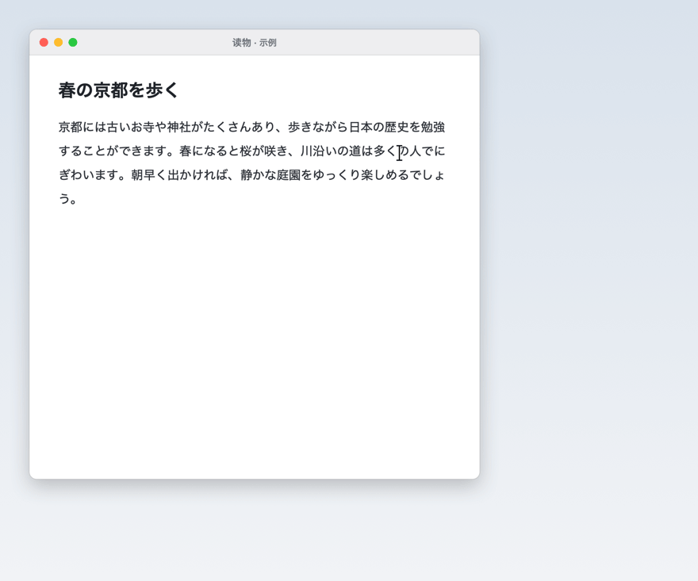
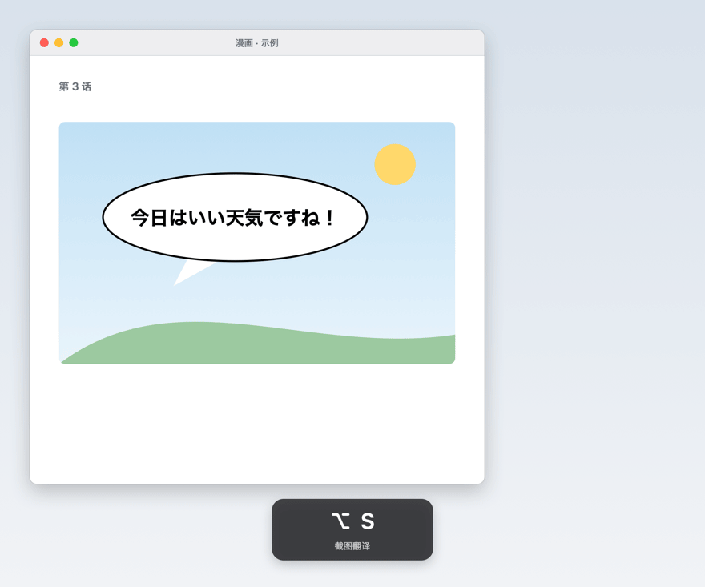
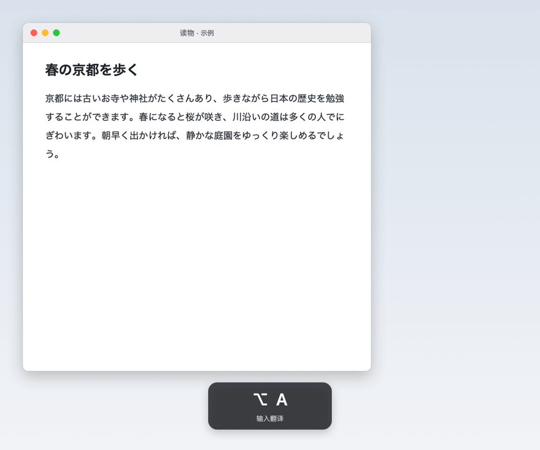
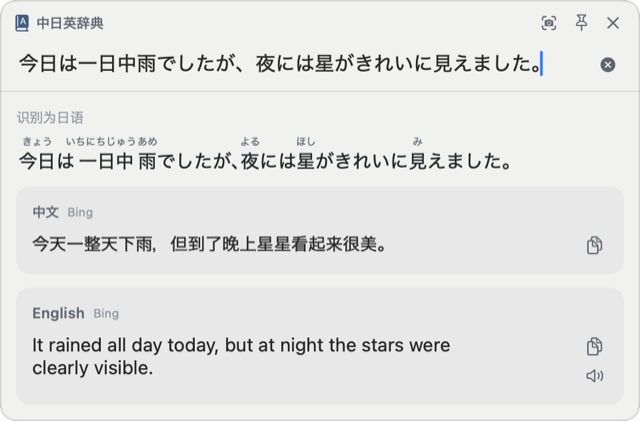

应用常驻菜单栏，可通过划词、截图或快捷键输入发起查询。
在任意应用中选中文本，悬停于随即出现的图标上，即可在选区旁查看查询结果。

框选屏幕区域，识别其中的文字并翻译，适用于漫画、游戏、视频字幕等无法选中的文本。

支持输入中文、英文、日文，自动识别输入语言。

中文与日语中存在大量写法相同、含义不同的词语，机器翻译常直接沿用原有汉字。对于此类词语，应用会提示其在日语中的实际含义，并列出经词典确认的对应词。
词典内容来自 MOJi 辞書、《デジタル大辞泉》与有道词典。
提供读音、声调、词性、JLPT 等级与分义项中文释义，并收录《デジタル大辞泉》日文释义。
日语单词与例句、英语单词均提供真人发音，英语区分英式与美式发音。
日文原文与译文自动标注假名，多音字与数量词按上下文确定读音，点击单词可查询其原形。
列出同一写法的全部读音，可一键切换，如「風車」かざぐるま／ふうしゃ。
提供英美音标、考试标签（CET-4 / CET-6 / 考研 / GRE 等）、词形变化、常用短语与双语例句。
支持 Bing 翻译与 macOS 系统离线翻译，可设置失败时自动切换；翻译前自动合并 PDF、网页文本中的排版换行。
支持浅色与深色模式。

快捷键可在「设置 › 通用」中自定义。
本应用未经 Apple 公证，首次打开时需在系统设置中确认。
下载 DMG 并双击打开，将 DictTranslator 拖到 「应用程序」 文件夹。
如系统提示 「无法验证开发者」 或 「已损坏」，请点击「完成」或「取消」关闭提示。文件本身并无问题。
前往 「系统设置 › 隐私与安全性」，在页面底部点击 「仍要打开」，并按提示输入密码确认。
根据引导授予 「辅助功能」（划词翻译）与 「屏幕与系统音频录制」（截图翻译）权限。未授予的权限仅影响对应功能。
xattr -dr com.apple.quarantine /Applications/DictTranslator.app
如仍无法打开，可在「终端」中执行上述命令后重新打开应用。
本应用免费使用，不含广告与内购，源代码以 GPL-3.0 协议在 GitHub 开源。
更新应用后，系统可能将其识别为新应用。请在「系统设置 › 隐私与安全性」的对应权限中移除「中日英辞典」，重新添加或勾选后重启应用。
「学习」「命令」「床」等中日通用的汉字词可能被识别为另一种语言，点击结果上方的「改为中文 / 改为日语」即可切换。
查词与句子翻译需要网络连接，选中或输入的文字将发送至 MOJi 辞書、Weblio、有道词典、Bing 等服务进行查询。截图仅在本机进行文字识别，识别后立即删除，不会上传。应用不包含任何统计或追踪功能。
下载新版本 DMG，将应用拖到「应用程序」中替换原有版本即可，设置会保留。